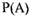
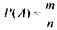
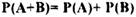
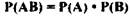
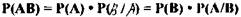
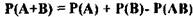
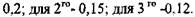
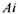
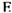
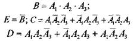

КЛАСИЧНЕ ВИЗНАЧЕННЯ ІМОВІРНОСТІ. ТЕОРЕМИ ТЕОРІЇ ІМОВІРНОСТЕЙ.
Імовірність  події А називається відношення т рівно можливих
наслідків, що сприяють події А, до загального числа п всіх рівно можливих наслідків експерименту, тобто

Сукупність можливих наслідків експерименту утворити множину елементарних подій.
Складна подія - це подія, яка виражається через елементарні події над подіями, наприклад, додавання, множенім
Сумою А+В двох подій А та В називають подію, яка полягає в тому, що з'явиться подія А або подія В.
Добуток А В двох подій А та В називають, подію, яка полягає в тому, що подія А подія В з'являться разом.
Обчислення ймовірностей складних подій сприяють теореми теорії ймовірностей: теореми додавання, множення, повної імовірності Бейса.
Імовірність суми двох несумісних подій рівна сумі імовірності цих подій

Імовірність добутку двох незалежних подій рівна добутку імовірності цих подій:

Імовірність добутку двох залежних подій рівна добутку імовірності однієї зних на умовну імовірність другої поліг
Імовірність суми двох сумісних подій рівна сумі імовірної, цих подій без імовірності їх добутку:

ПРИКЛАД: Із трьох комп'ютерів, що обслуговуються одним програмістом імовірність збою протягом години становлять для 1го комп'ютера -
Визначити імовірність того, що: 1)всі три комп'ютери зупиняться: 2)зупиниться тільки один комп'ютер; 3)зупиниться тільки два комп'ютери 4)буде працювати хоча б один комп'ютер.
РОЗВ'ЯЗОК: Позначимо  - зупинився і-й комп'ютер, тоді и- протилежна подія, тобто і-й комп'ютер працює. В - всі три комп'ютера зупиняться, С - зупиниться тільки один комп'ютер, D - зупиняться тільки два комп'ютери,- буде працювати хоча б один комп'ютер.
Очевидно ,
Тоді.